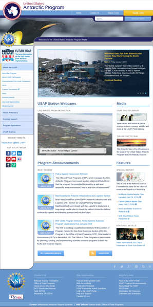
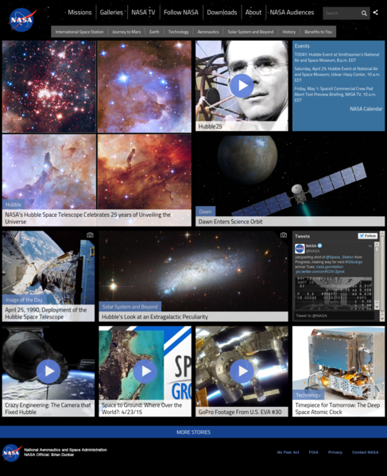

+WEB
A website (also written as web site) is a collection of web pages and related content that is identified by a common domain name and published on at least one web server. Notable examples are wikipedia.org, google.com, and amazon.com. All publicly accessible websites collectively constitute the World Wide Web. There are also private websites that can only be accessed on a private network, such as a company's internal website for its employees. Websites are typically dedicated to a particular topic or purpose, such as news, education, commerce, entertainment, or social networking. Hyperlinking between web pages guides the navigation of the site, which often starts with a home page. Users can access websites on a range of devices, including desktops, laptops, tablets, and smartphones. The software application used on these devices is called a web browser.
 +GRAPHICS
Graphics (from Greek γραφικός graphikos, "belonging to drawing") are visual images or designs on some surface, such as a wall, canvas, screen, paper, or stone to inform, illustrate, or entertain. In contemporary usage, it includes a pictorial representation of data, as in c manufacture, in typesetting and the graphic arts, and in educational and recreational software. Images that are generated by a computer are called computer graphics. Examples are photographs, drawings, line art, graphs, diagrams, typography, numbers, symbols, geometric designs, maps, engineering drawings, or other images. Graphics often combine text, illustration, and color. Graphic design may consist of the deliberate selection, creation, or arrangement of typography alone, as in a brochure, flyer, poster, web site, or book without any other element. Clarity or effective communication may be the objective, association with other cultural elements may be sought, or merely, the creation of a distinctive style. Graphics can be functional or artistic. The latter can be a recorded version, such as a photograph, or interpretation by a scientist to highlight essential features, or an artist, in which case the distinction with imaginary graphics may become blurred. It can also be used for architecture.
+ANIMATION
Animation is a method in which figures are manipulated to appear as moving images. In traditional animation, images are drawn or painted by hand on transparent celluloid sheets to be photographed and exhibited on film. Today, most animations are made with computer-generated imagery (CGI). Computer animation can be very detailed 3D animation, while 2D computer animation can be used for stylistic reasons, low bandwidth or faster real-time renderings. Other common animation methods apply a stop motion technique to two and three-dimensional objects like paper cutouts, puppets or clay figures.
+VIDEO EDITING
Video editing is the manipulation and arrangement of video shots. Video editing is used to structure and present all video information, including films and television shows, video advertisements and video essays. Video editing has been dramatically democratized in recent years by editing software available for personal computers. Editing video can be difficult and tedious, so several technologies have been produced to aid people in this task. Pen based video editing software was developed in order to give people a more intuitive and fast way to edit video.[1]